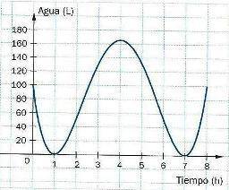

Marcando opciones correctas
1) Considerá la función : f (x) = -x (x-3) (x+2)
a) Las únicas raíces de f son x = 3 y x = -2
| |
b) En el intervalo (-2;0) la función es negativa .
| |
c) La gráfica pasa por el punto (0;0)
| |
d) La función es de grado 3.
| |
2) Una función polinómica tiene el siguiente conjunto de positividad :
C+ = (-∞;-4) υ (-4;0) υ (2;4)
a) Esa información alcanza para conocer el conjunto de ceros de la función.
| |
b) Esa información alcanza para conocer el conjunto de negatividad de la función .
| |
c) Esa información alcanza para conocer el grado de la función.
| |
d) Esa información alcanza para saber que una de sus raíces es de multiplicidad par.
| |
3) El gráfico de una función polinómica es el siguiente:

a) La función es positiva en todo su dominio.
| |
b) El menor grado que puede tener la función es 3.
| |
c) f(o) = 100
| |
d) Todas sus raíces son de multiplicidad par.
| |